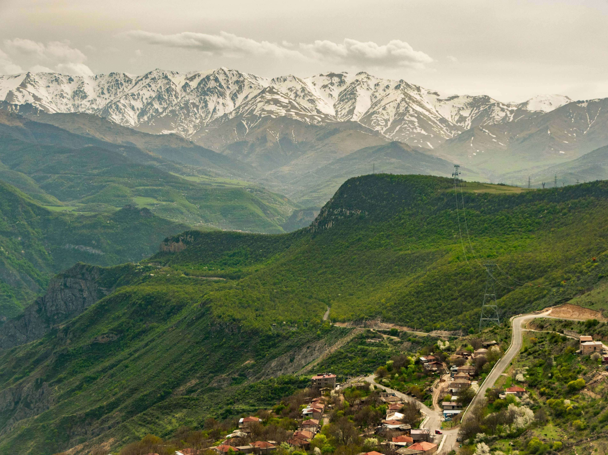
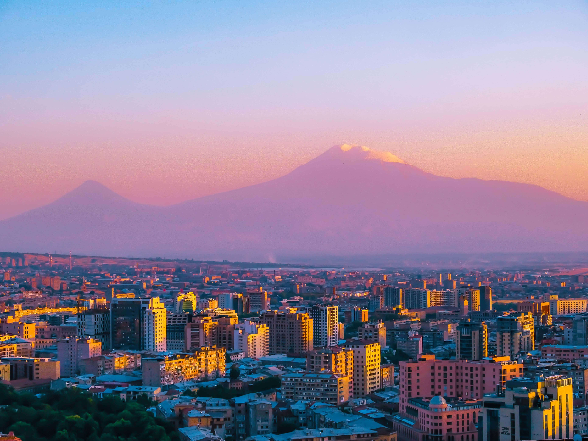
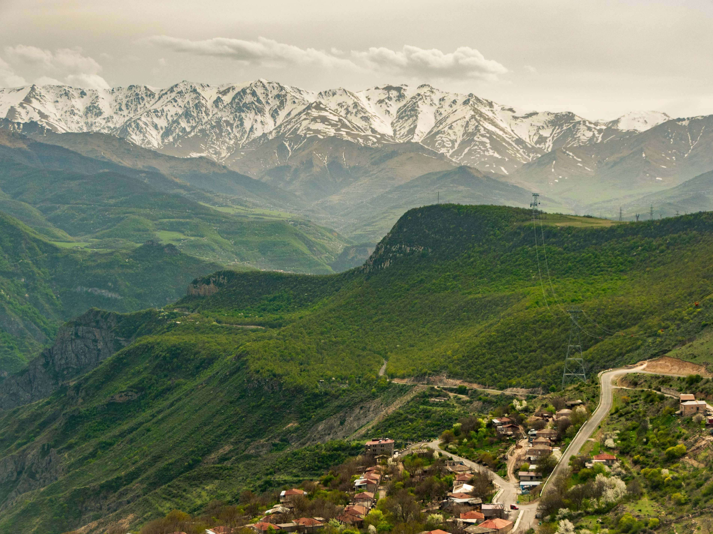
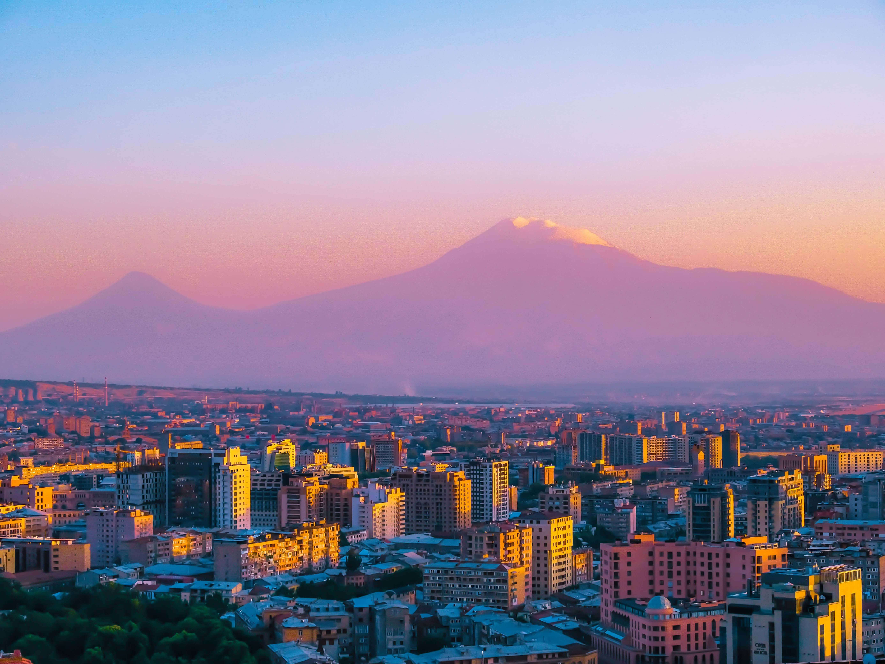

Ancient Monasteries

The Kingdom of Armenia was the first nation to adopt Christianity as its official religion in 301 AD. That legacy lives on in the 4,000-plus Armenian Apostolic churches and monasteries throughout the country.
Armenia is world-renowned for its unique ecclesiastical architecture. Because Christianity has been around for so long, it has entirely naturally become interwoven with Armenian identity and influences almost every aspect of local culture, especially architecture.